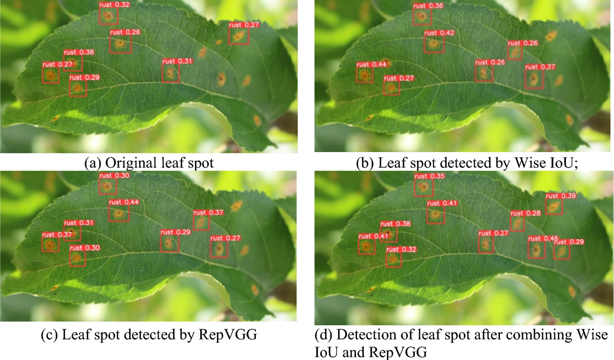
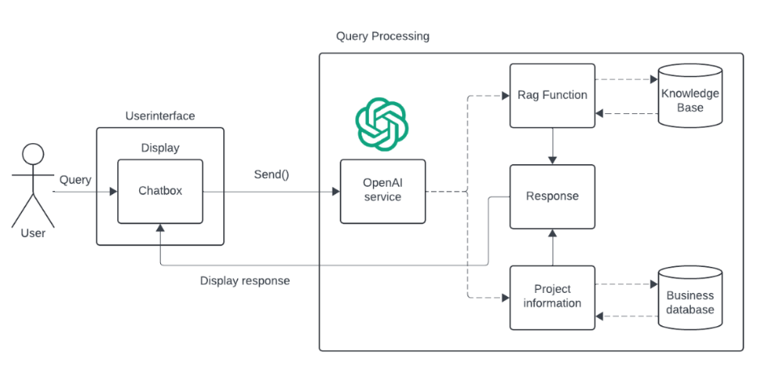
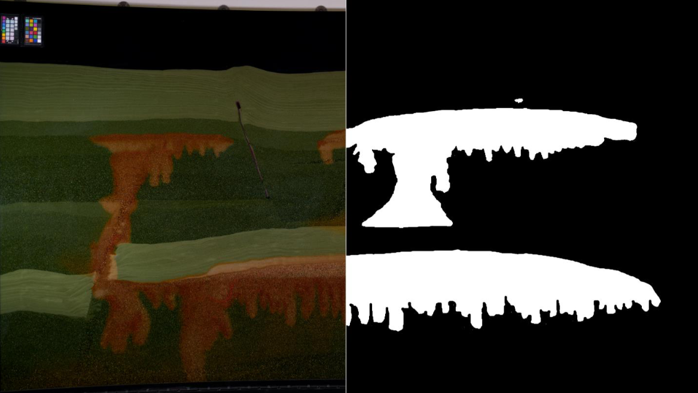

Bachelor Projects
Below is a list of past and current bachelor projects I have supervised.
- Machine Learning for Battery Degradation in Electric Ferries (2025)
Jonas, Christian, Tanvir - RESTful Resource Recovery: A Monitoring System (2025)
Felix, Moussa, David, Ibrahim - Human Attention Detection for Agricultural Safety (2025)
Ketil, Jonas, Ana - FjordGPT: AI-Assisted Maritime Documentation (2025)
Siri, Sondre, Jobjørn -
Using Object Recognition Software to Identify Abnormalities on a Filtration Belt (2024)
Ingunn Supphellen, Ole-Kristian Indrebø Apelseth
This team delivered an exceptionally thorough project, exploring multiple machine learning approaches for detecting abnormalities on a filtration belt. They conducted an in-depth comparison of YOLO, Faster R-CNN, and alternative methods, iterating through several models to refine accuracy and performance. Their methodical approach and deep technical insight made for an impressive project, both in execution and analysis. Beyond their technical work, Ingunn and Ole-Kristian were fantastic to work with — both are thorough, professional, kind and polite.

Due to an NDA, the project report is not publicly available. To illustrate the project, I use another illustration of machine learning-based detection of leaf damage, similar to approaches used in the project. Figure from Liu & Li (2024). - Development of an AI-Driven Chatbot Assistant (2024)
Markus Nedrevold, Marius Larsen, Ørjan Knudsen
Developed a chatbot prototype for Proresult AS using OpenAI, Flask, Vue, and LlamaIndex. The project explored retrieval-augmented generation (RAG) and function calling to enable precise answers from structured and unstructured data, making the assistant more reliable and useful. Markus, Marius, and Ørjan approached the project with curiosity and a strong problem-solving mindset, figuring out solutions largely on their own while keeping discussions productive and enjoyable. 
Figure 4-5 from the thesis. A key idea is that different types of data needs to be analysed in different ways (i.e. RAG versus function calling). Read the full thesis here.
-
Neural Network-Enhanced CO₂ Detection in Carbon Storage Experiments (2024)
Øyvind Aasmul Onarheim, Andre Kristopher Ripman, Tor Magne Solheimsnes
Built a solid neural network for detecting CO₂ in experimental images from the University of Bergen’s FluidFlower model, exploring machine learning techniques for better image-based analysis in carbon storage research. A self-driven and enthusiastic group, they tackled challenges with both curiosity and humor, making it a pleasure to work with them.

Figure 5-1 from the thesis. The left half shows the input image while the target output is shown to the right. Read the full thesis here.
- HOT: Handcrafted Objects Tool (2020)
Karl Henrik Elg Barlinn
Elg developed a GUI for creating JSON files, designed for use in various applications, particularly video games. A super enthusiastic, self-driven, and talented guy, Karl Henrik tackled the project with great energy and a positive mindset, making it a pleasure (and extremely easy) to help him along the way.